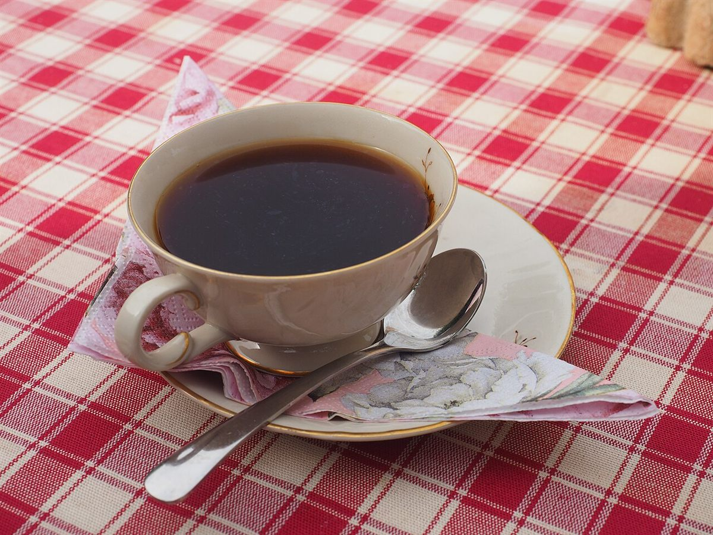
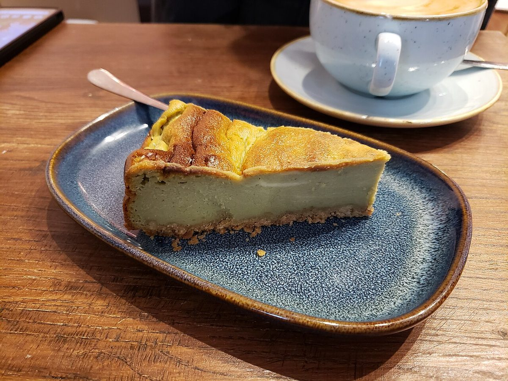
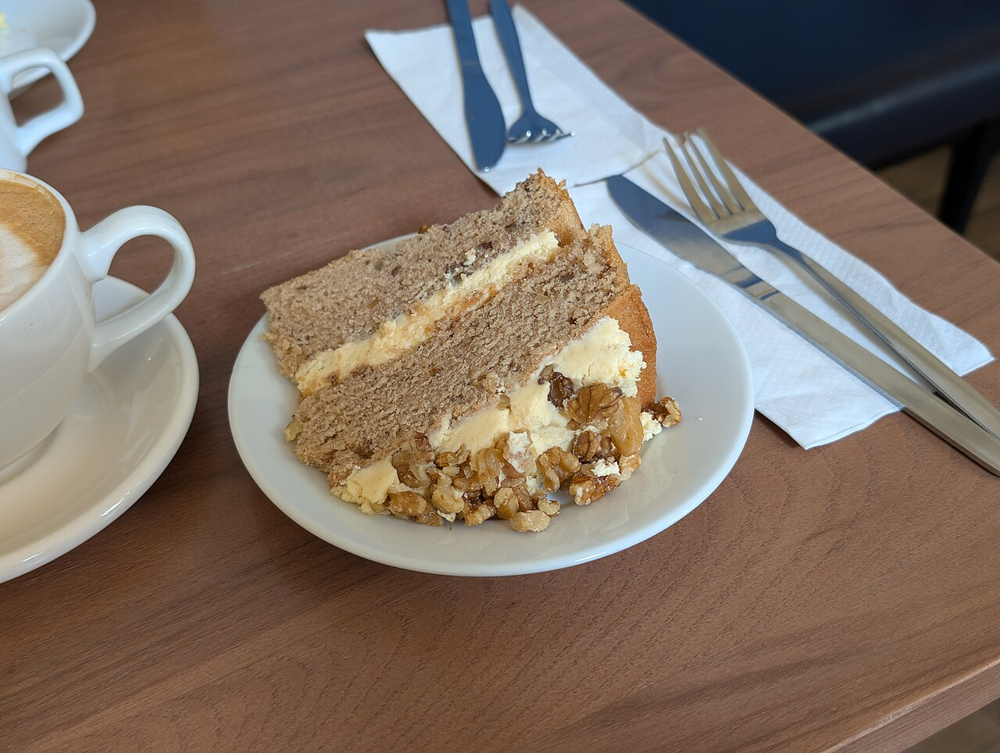
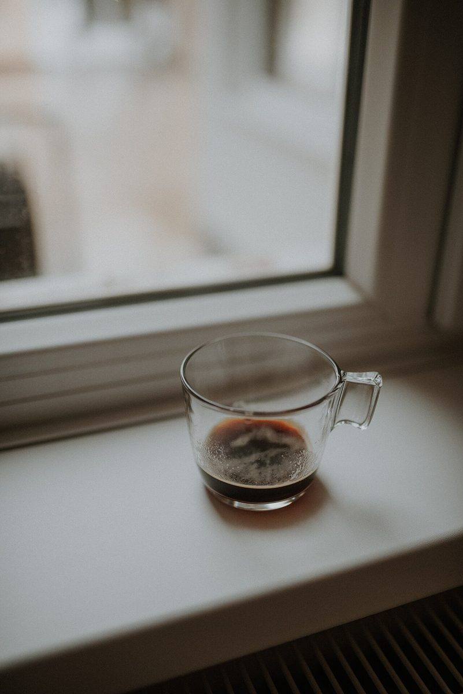

カフェ / ガトー ・ 宮城県塩竈市
となりの
珈琲や
となりの席に座るように、ふらりと立ち寄って、一杯の珈琲と一切れのケーキを。そんなふだん着のひとときを思い描いたページです。
Instagramを見る場所を見る
お店のこと
珈琲とケーキの、小さなお店。
「となりの珈琲や」は、宮城県塩竈市の海岸通にあるカフェです。Instagramのプロフィールでは「café/gâteau」(カフェとケーキ)と紹介されています。投稿のハイライトには、クリスマスケーキのご予約も見られます。
確認できたのは上記の範囲です。店名の由来やオーナーの想いは、公開情報からは確認できませんでした。「となり」という言葉から、ふだんの暮らしのすぐそばにある珈琲屋、というイメージで構成したのは制作側の解釈です。お店の考えを示すものではありません。

| 所在地 | 〒985-0002 宮城県塩竈市海岸通2-24 |
|---|---|
| 電話 | 準備中 |
| 営業時間 | 準備中 |
| 定休日 | 準備中 |
| SNS | Instagram @tonarinocoffeeya |
メニュー(イメージ)
珈琲と、ケーキと。
提供内容は「珈琲」と「ケーキ(ガトー)」を中心とするとみられます。品目・価格・季節の商品は準備中です。下の写真はフリー素材のイメージで、お店の商品ではありません。
ガトー






珈琲





口コミ(イメージ例)
こんなひとときになりそうです。
以下は制作側が創作したイメージ例で、実在のお客様の声ではありません。
イメージ例
仕事帰りに寄って、珈琲とケーキでひと息。ふだんの延長のように入れる気楽さがいいなと思いました。
イメージ例1
イメージ例
海のそばをお散歩したあとに、あたたかい一杯を。ゆっくり過ごせる時間がうれしいです。
イメージ例2
イメージ例
手みやげにケーキを選ぶのも楽しみのひとつ。また近くに来たら寄りたくなります。
イメージ例3
アクセス
場所のご案内
〒985-0002 宮城県塩竈市海岸通2-24
営業時間・定休日・電話番号は準備中です。最新の情報はInstagramをご覧ください。